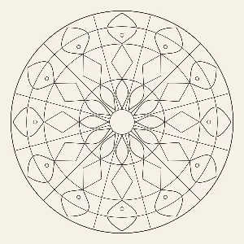
Sternkranz
Zwölf Spitzen, ruhiger Grundriss
- Achsen
- 12
Alle 34 Vorlagen des Mandala Ateliers und die 5 Stimmungen von Blatt — nebeneinander, um sie einmal ohne Durchtippen zu sehen.
Diese Tafel ist nicht gezeichnet, sondern abfotografiert. Auf den beiden Schwesterseiten — Motivfamilien und Moderne — stehen mögliche Ordnungen als Schemata von Hand. Hier laufen die Apps selbst: Jedes Bild entsteht, indem das Motiv wirklich geladen und die Zeichenfläche ausgelesen wird. Eine nachgezeichnete Tafel wäre ab dem ersten geänderten Motiv gelogen, und niemand merkte es. Weicht etwas ab, ist die App gemeint.
Was zu sehen ist, ist die leere Vorlage. Keine Farbe, kein Füllstand — so liegt das Blatt da, bevor jemand anfängt. Die Zahlen darunter stammen aus dem Datensatz des Motivs, nicht aus einer zweiten Liste: Achsen ist die Zähligkeit, Zonen sind die Ringe der gestaffelten Symmetrie mit ihrer je eigenen Achsenzahl.
Katalog ist keine eigene Motivwelt. Er zeigt nur Bild, Name und die nackten Zahlen aller Vorlagen aus allen sechs Welten des Ateliers, dazu die fünf Beispiele aus Blatt — der schnelle Überblick ohne Text. Woher eine Welt kommt und was sie ausmacht, steht auf ihrer eigenen Seite: Geometrisch-klassisch, Natur, Zen & Achtsamkeit, Jahreszeiten, Anlagen, Kids-Corner — und, als Vorschläge, sechs weitere.
Die Grundlage. Ring, Speiche, Blatt, Raute, Band — aus diesen Bausteinen besteht auch alles andere. Wer hier anfängt, lernt nebenbei, was das Symmetriewerkzeug tut.

Zwölf Spitzen, ruhiger Grundriss
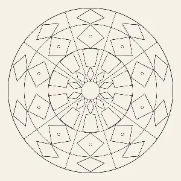
Rauten in drei Größen
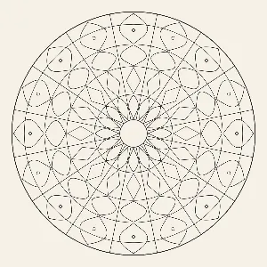
Sechzehn Achsen, viele kleine Felder
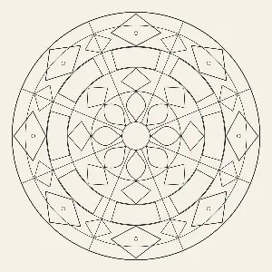
Acht Achsen, klare Kanten
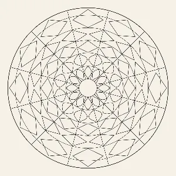
Verschränkte Rauten, dichtes Netz
Gewachsene Ordnung: Blüten, Blätter, Spiralen, Samen. Weichere Kurven, unregelmäßigere Felder — und darum das, was am ehesten nach Zeichnung und am wenigsten nach Konstruktion aussieht.
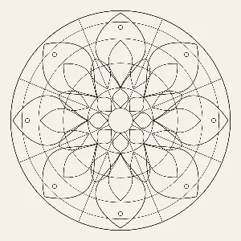
Acht große Blätter, viel Fläche
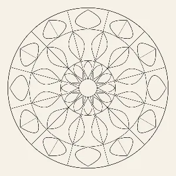
Blätter mit Mittelrippe, versetzt
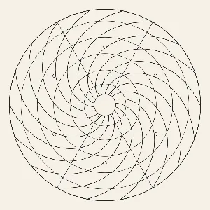
Sechs Arme, weite Bögen
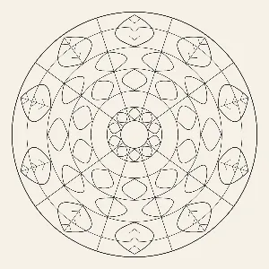
Wedel mit feinen Fiedern
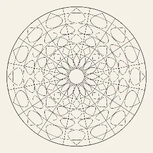
Sechzehn Samen, feine Teilung
Wenig, und das mit Ruhe. Große, klare Felder, wenige Achsen, keine Verflechtung. Gedacht für die Viertelstunde, in der man nichts entscheiden möchte.
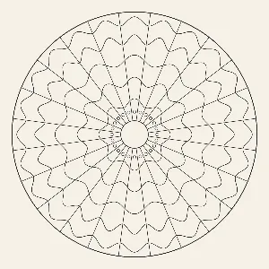
Fünf Wellenringe, gleichmäßiger Takt
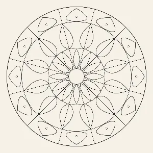
Tropfen in zwei Lagen, versetzt
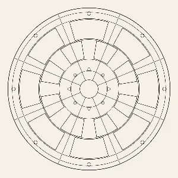
Wenige große Flächen, viel Raum
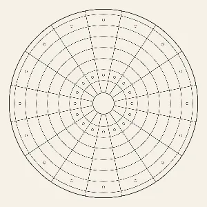
Ruhiger Takt, gleichmäßige Weite
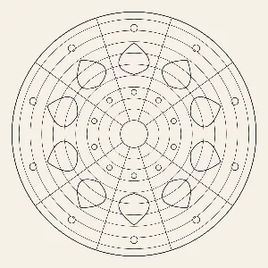
Wenige Formen, geharkte Bahnen
Vier Blätter mit einer Jahreszeit als Vorwand. Sie sind nicht strenger oder freier als die anderen — sie geben nur einen Anlass, zu einer bestimmten Farbwelt zu greifen.
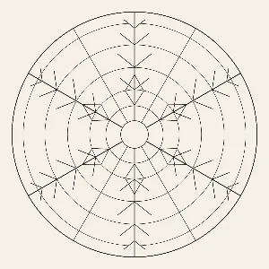
Schneekristall mit Seitenästen
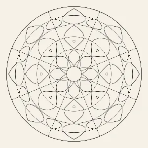
Knospen in drei Lagen
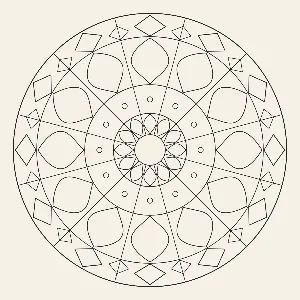
Strahlenkranz um eine offene Mitte
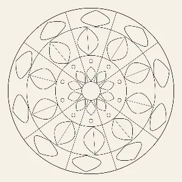
Geneigte Blätter, Eicheln als Punkte
Das Mandala als Grundriss, nicht als Muster. Von außen nach innen: Schutzbereich, Vorhöfe, Tore, Mauern, Kammer, Mitte. Dazu gehört die gestaffelte Symmetrie — die Achsenzahl hängt davon ab, wo die Hand aufsetzt, nicht nur davon, was eingestellt ist. Die Vorbilder stehen auf der Schautafel der Motivfamilien; übernommen ist jeweils die Ordnung, nicht die Bedeutung.
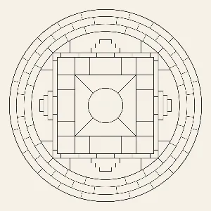
Vier Tore, drei Bereiche
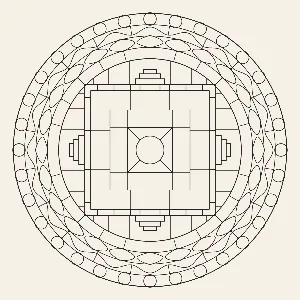
Vier Tore, vier Ringbänder
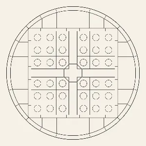
Vier Wasserläufe, sechsunddreißig Beete
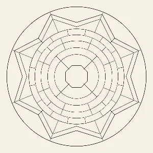
Acht Bastionen, eine Piazza
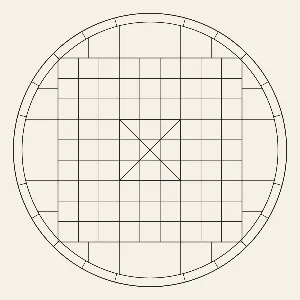
Neun mal neun Felder, kein Kranz
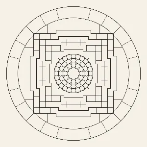
Außen eckig, innen rund
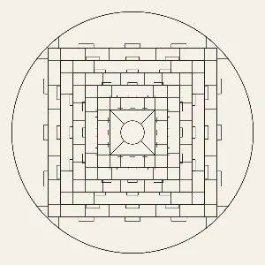
Zwölf Tore, sechs Mauern
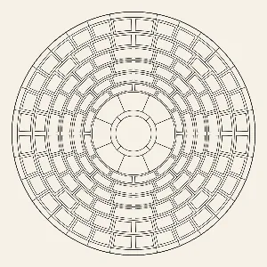
Ein Gewölbe von unten, 132 Kassetten
Sehr große Felder und wenige Achsen für kleine Hände, dazu Zähl- und Rechenmandalas mit einer Aufgabe über dem Blatt. Bedient wird das von Eltern und Lehrkräften — deshalb kein Kinder-Look, sondern dieselbe ruhige Oberfläche wie sonst.
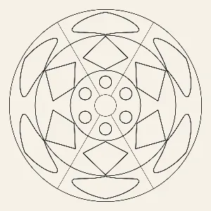
Kindergarten – sehr große Felder
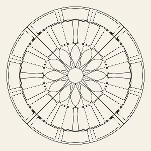
Grundschule – Bänder im Wechsel
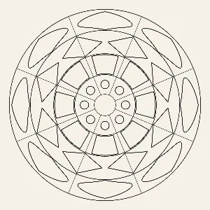
Kindergarten – runde und eckige Felder
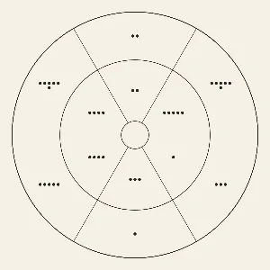
Punkte zählen, nach Anzahl färben
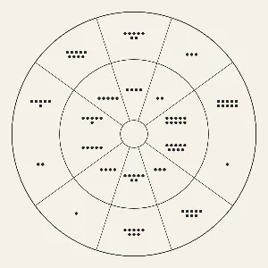
Punkte zählen bis zehn
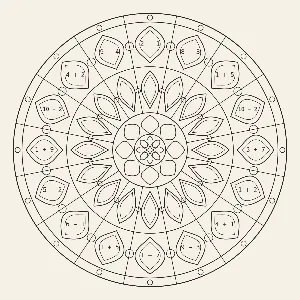
Plus und Minus im Zahlenraum 10
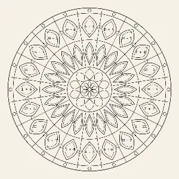
Plus und Minus im Zahlenraum 20
Blatt hat keinen Katalog. Es gibt kein Motiv zum Auswählen — man nimmt eine Stimmung, und das Blatt wird gewürfelt. Was hier steht, ist also je ein Beispiel, nicht die Vorlage selbst: Beim nächsten Mal sieht es anders aus. Gezeigt ist das Relief so, wie es nach ein paar leichten Zügen aussähe. Die Stimmung „Anlage“ zieht dabei eine von 8 Grammatiken — die stehen auf der eigenen Tafel.
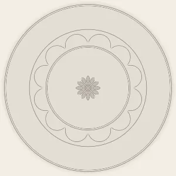
ein gewürfeltes Beispiel
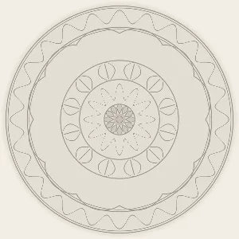
ein gewürfeltes Beispiel
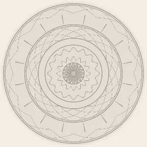
ein gewürfeltes Beispiel
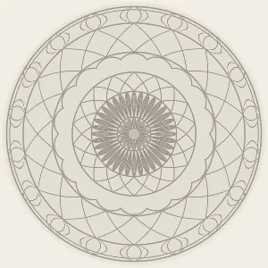
ein gewürfeltes Beispiel
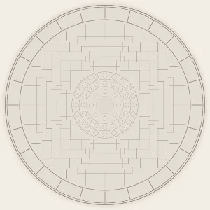
ein gewürfeltes Beispiel
Stand: Mandala Atelier 2.22, Blatt 3.15. Frühere Fassungen stehen im Regal und lassen sich dort öffnen.
{kind=link}